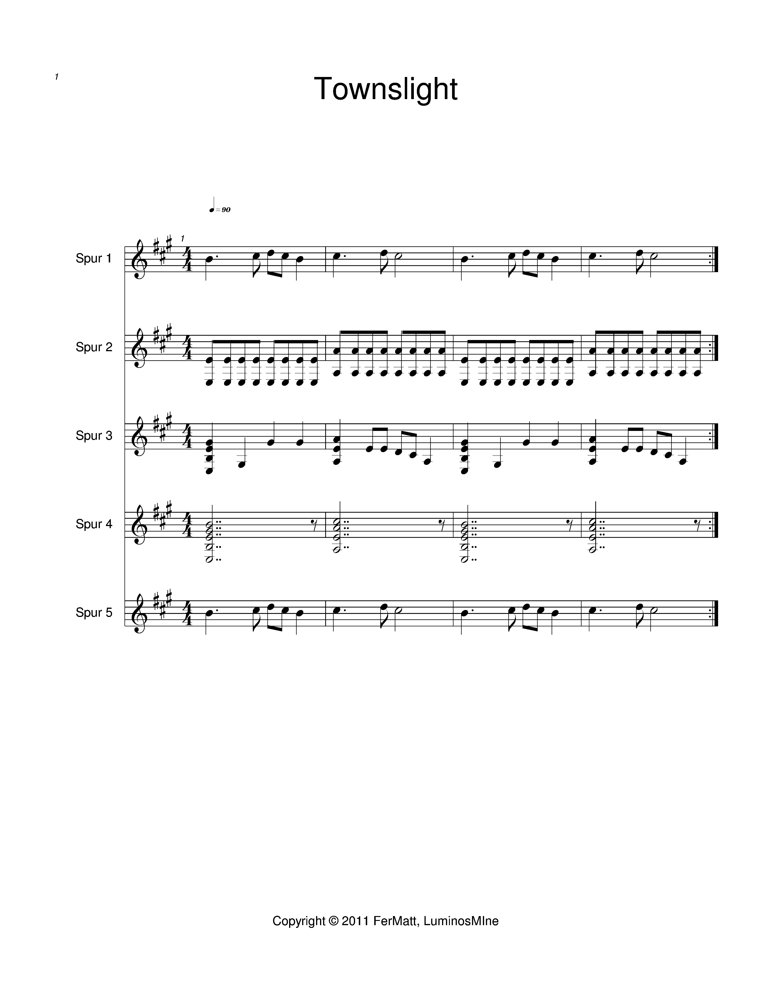
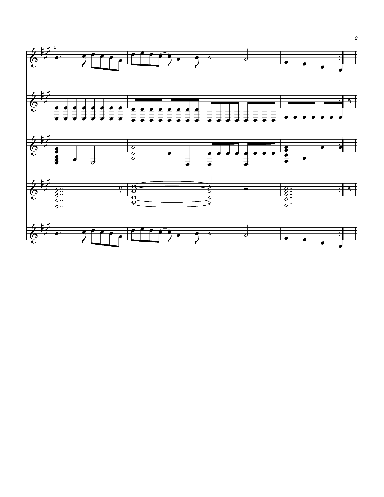

Infos:
Dieses Stück hätte es beinahe in das Spiel "Weedfighter" in der Games Rubrik geschafft.
Es sollte, wie man am Namen erkennen kann, in einer Stadt als Melodie gespielt werden.
Aus diesem Grund ist die Melodie sehr gleichbleibend und schwebt vor sich hin.
In Spielen dieser Art, wo es möglich ist in einer Stadt herum zu laufen,
plätschert die Musik vor sich hin, ohne den Spieler zu sehr abzulenken.
Man kann ebenfalls erkennen, dass das letzte Wiederholungszeichen sehr nah
an der letzten Note sitzt und ein sehr abruptes Ende vermuten lässt.
Wenn das Lied endet, sollte es im idealen Fall im Spiel ohne große Pausen
weitergehen und in einer Endlosschleife gespielt werden.
Da das verwendete Programm für die Spieleentwicklung allerdings eine kurze Zeit zum Laden des Songs benötigt,
wurde versucht, diese Ladezeit mit der Verkürzung des Liedendes zu kompensieren,
was leider nur mäßig erfolgreich war.

